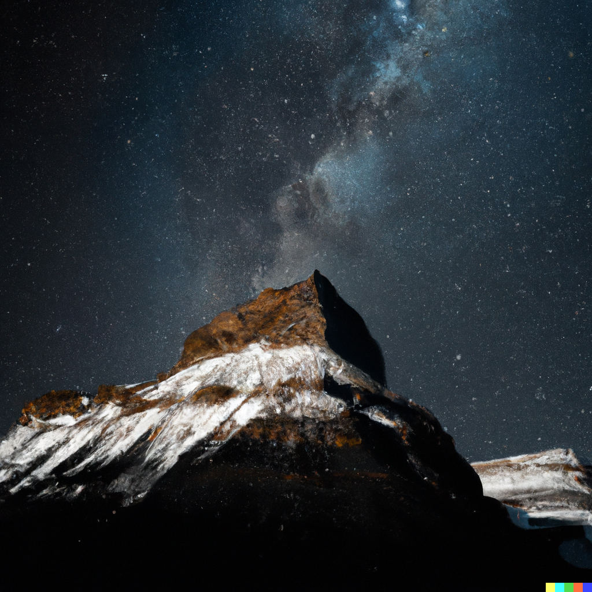
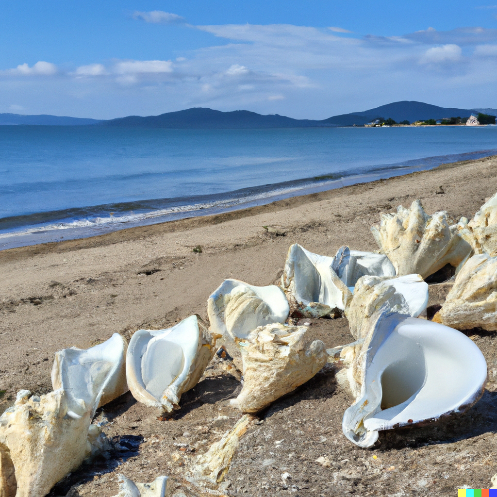
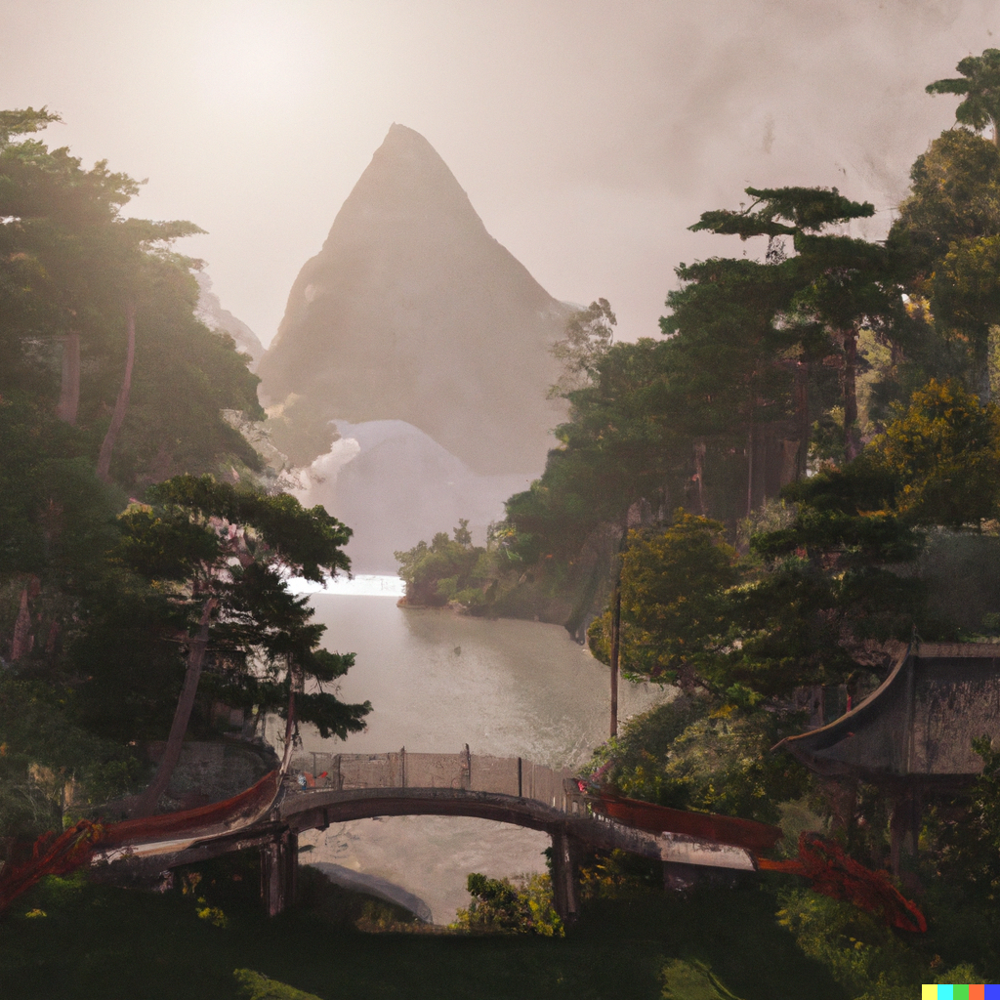
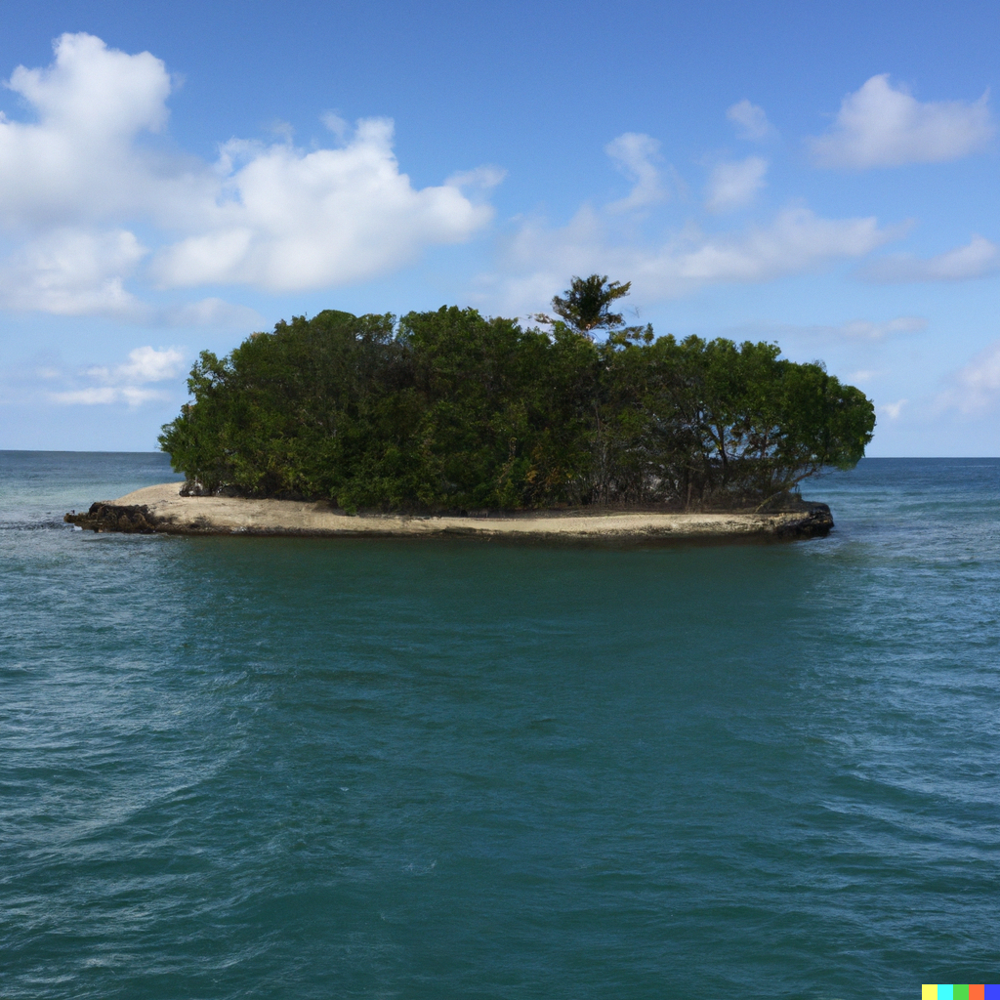
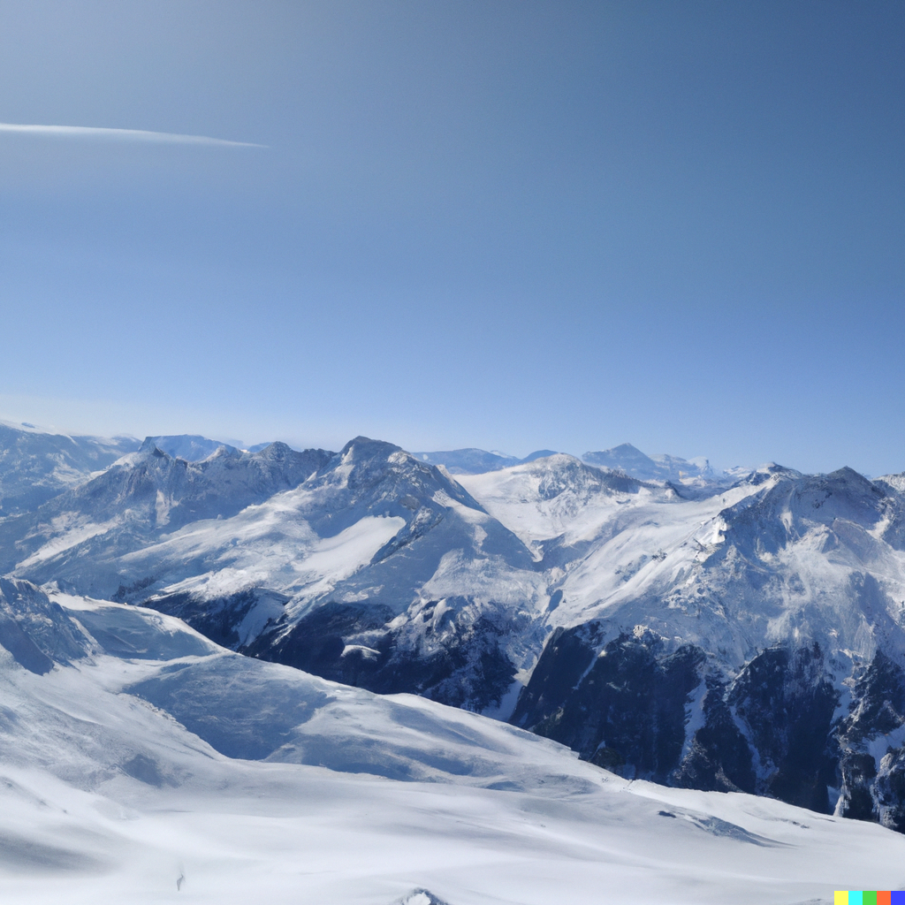
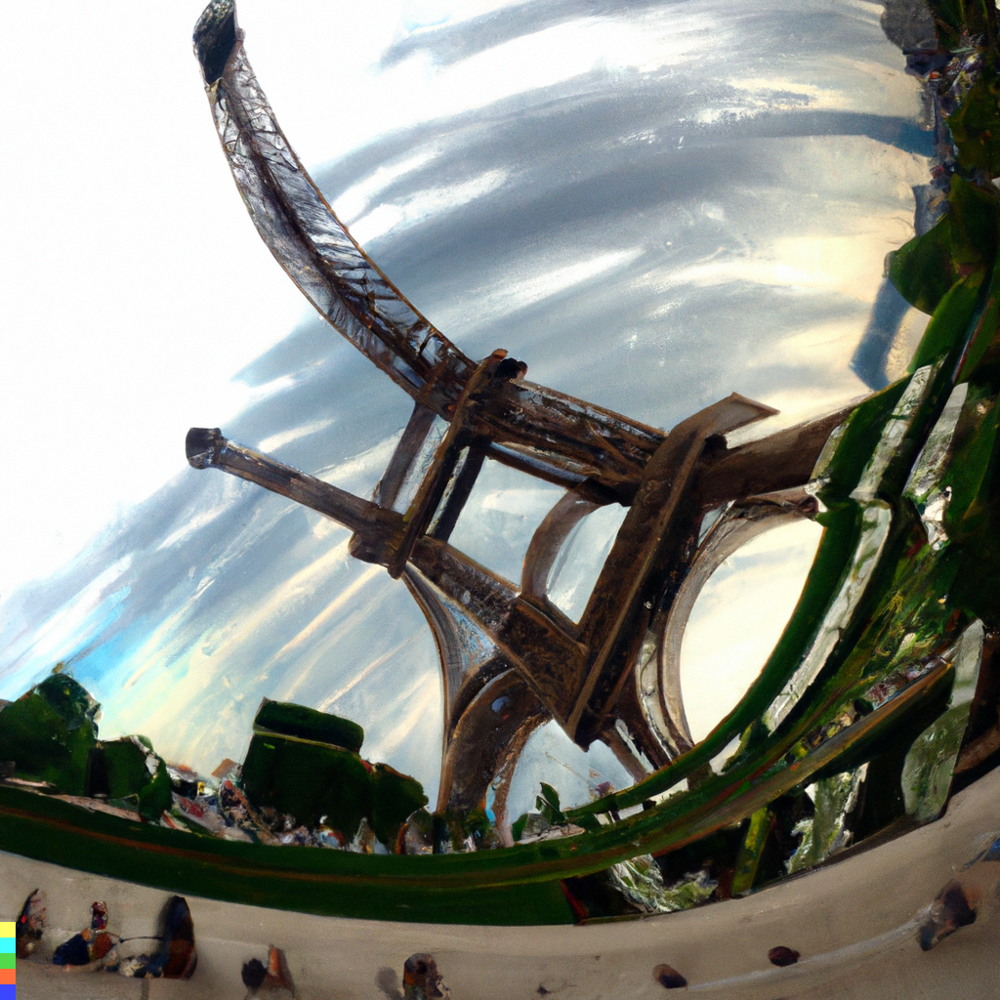

RÉPUBLIQUE LISTENBOURGEOISE
Les différents lieux touristiques du Listenbourg.
Le Mont NoirLe Mont Noir est le quatrième point culminant en Europe, avec 4002 mètres d'altitude. Cette montagne, située dans la région Caséière (fontalière à l'Espagne), nous offre une possibilité de voir, lors de la tombée de la nuit, un spectacle ahurissant d'étoiles qui dansent et qui tournent autour de l'Étoile Polaire. Pour seulement 33,55Ł (petit déjeuner compris) par nuit, vous pourrez observer le paysage, rempli de magie. Vous pourrez également observer dans l'hôtel à votre disposition un paysage, donnant sur la petite ville de Port'tal. Coût d'accès : 0Ł. Possibilité de passer la nuit sur place (33,55Ł par nuit et par personne, petit déjeuner compris). |
 |
La plage des Sèchent-ellesLa plage des Sèchent-elles est parmi l'une des plus belles plages du monde, située dans la région Adriàs. Elle contient une belle étendue de sable de plusieurs centaines de kilomètres, sur laquelle sont éparpillés de multiples coquillages géants, tous entre 40 centimètres et 1 mètre pour les plus gros. Attention si vous voulez en ramener un chez vous, il vous faudra débourser la modique somme de 7Ł ainsi que quelques efforts, étant donné que la plupart des coquillages pèsent entre 30 et 48 kilogrammes. La légende raconte que si vous avez de la chance, certains de ces géants peuvent parfois vous donner une perle, de pure obsidienne... Mais bon, pour le savoir, il faut s'y rendre. Coût d'accès : 0Ł, pas de possibilité de passer la nuit sur place. |
 |
JapantownJapantown est une ville typée japonaise au Listenbourg, ou plutôt un quartier de la capitale Lurenberg. Un peu comme Chinatown aux États-Unis, vous pourrez y voir des tas de choses appartenants à la culture japonaise. Vous pourrez aller dans les restaurants spécialisés, ou des hôtels-types. Attention, ces quartiers peuvent parfois être dangereux. De magnifiques lacs que vous ne devez pas rater si vous aller là-bas. ジャパンタウンはリッスンブールにある典型的な日本の都市で、首都ルーレンベルグの一地区です。アメリカのチャイナタウンのように、日本文化に属するものがたくさん見られます。専門のレストランや標準的なホテルに行くことができます。これらの地域は危険な場合があるので注意してください。行くなら見逃せない美しい湖. (désolé tomo on a pris ça sur google traduction mais t'inquiètes pas t'es un chic type au fond) Coût d'accès : 0Ł. Possibilité de passer une nuit sur place (20,00Ł par nuit et par personne). |
 |
ChépaouUne minuscule île située au sud du Listenbourg, cette île peut être privatisée pour maximum une semaine. Là-bas, vous aurez TOUT de fourni : hôtel (★★★★), petit déjeuner... enfin on vous épargne tous les détails. Attention cependant si vous allez vous baigner : vous pourrez croiser quelques mauvaises surprises ! Cout d'accès : 300Ł (prix à la semaine) par paire de personnes. |
 |
Les Montagnes ListenbourgeoisesLes Montagnes Listenbourgeoises sont des Montagnes tout ce qu'il y a de plus simple, sauf que cette fois-ci, vous ne pourrez pas dormir sur place : ces montagnes-là sont faites pour skier ! Vous trouverez sur place une buvette, une station de ski, le magasin spécial sport pour la location de tout le matériel... Et tout un tas de choses encore ! Vous pourrez admirer de 7:00 à 21:00 les montagnes, ou les dévaler pour les plus téméraires. Coût d'accès : 245Ł par semaine et par personne. Attention au hors-piste ! |
 |
Le musée du VrelouLe musée du Vrelou, situé dans la capitale Luremberg, est le symbole de culture du Listenbourg. Vous y trouverez des oeuvres d'art peintes par les plus grands, comme ci-contre : La Tourré Faile. Sur place, vous avez aussi un magasin de souvenirs, un restaurant avec des spécialités locales, une boîte à donations... Coût d'accès : 0Ł (on remercie le ministre de la culture). |
 |